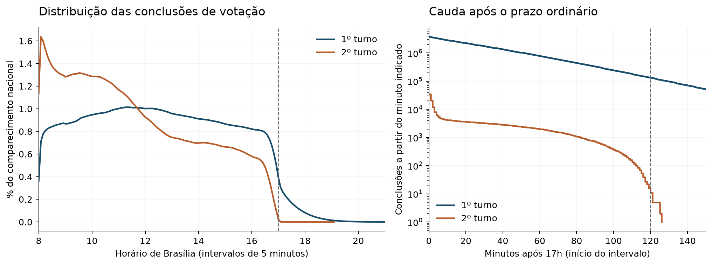
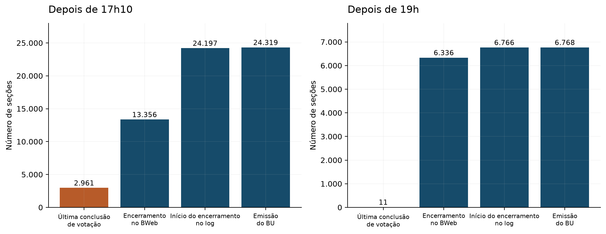
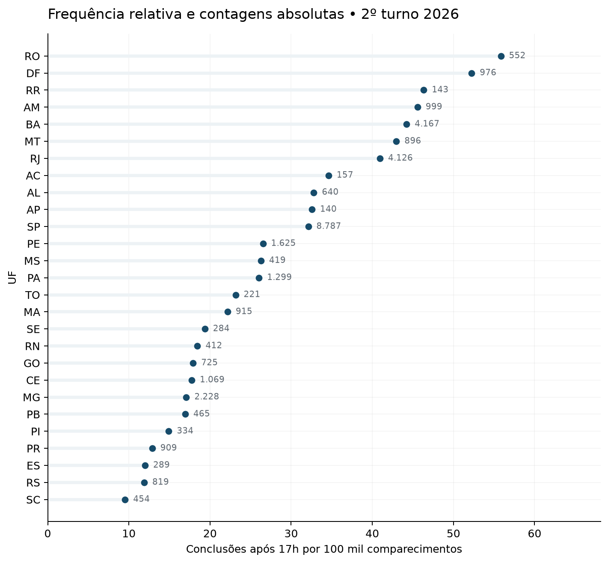
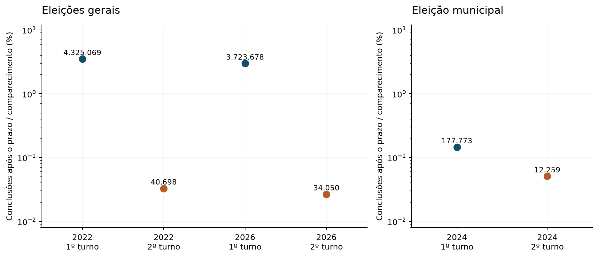
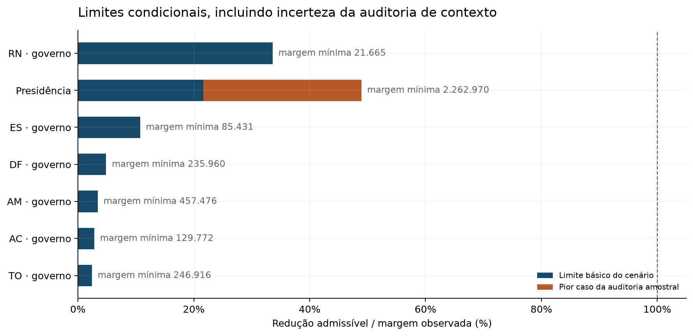
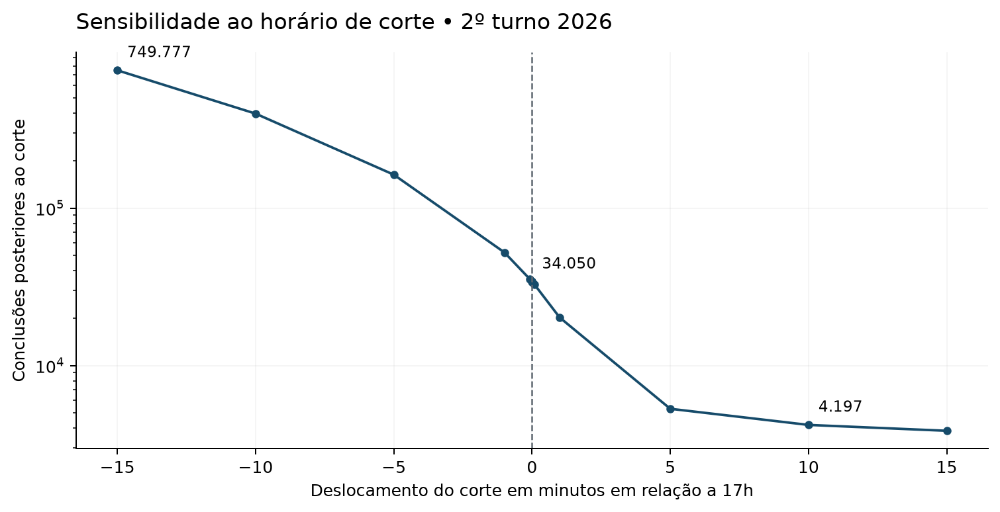

Participação, horários registrados, comparações históricas e limites para as margens eleitorais
Análise científica dos registros públicos disponíveis até 31 de outubro de 2026. Revisão interna de métodos, números e apresentação; não submetida a revisão por pares externa.
Esta pesquisa examina o que os registros públicos permitem afirmar sobre a prorrogação judicial de duas horas no segundo turno de 2026. A pergunta causal é quanto a decisão alterou a participação e as margens eleitorais em relação a uma eleição com as regras ordinárias, inclusive o direito de votar de quem já estava na fila. O horário de um registro, por si só, não identifica esse efeito.
A reconstrução nacional de 2026 identifica 34.050 eventos de conclusão de votação estritamente posteriores às 17h de Brasília no território brasileiro, ou 34.330 incluindo os 280 eventos registrados exatamente às 17h. As contagens usam a data do pleito, o contexto interno de seção quando auditado e os fusos municipais aplicáveis. Elas não identificam candidatos escolhidos nem quantos participantes votaram em consequência da decisão. A lacuna doméstica de contagens no segundo turno soma 322 participações, sob a hipótese de ausência de eventos espúrios, e recebe tratamento conservador nas análises de sensibilidade.
Os 34.393 registros divulgados pelo TSE foram reproduzidos integralmente nas 108 células de votos por UF e intervalo horário mediante um diagnóstico que utiliza fusos uniformes para Amazonas e Pernambuco e inclui o instante exato das 17h. A diferença de 63 registros em relação à conversão municipal decorre de menos 31 no Amazonas e mais 94 em Pernambuco. Essa reprodução é compatível com tal convenção, mas não demonstra qual algoritmo o TSE executou. O relatório mantém a conversão municipal, sustentada pelas regras oficiais e pelos horários de abertura.
Os dados observados admitem tanto um cenário em que os participantes tardios já tinham direito ordinário à votação quanto cenários com novas admissões em razão da extensão. Portanto, o efeito causal pontual não está identificado. Em um mecanismo restrito de participantes adicionais, limites conservadores preservam o sinal das sete margens de segundo turno nos 84 cenários básicos. A auditoria adicional inspecionou 63.362 pacotes sem detectar falha de identidade. Incorporando seu limite amostral adverso e antecipando o corte em 15 minutos, a margem presidencial mínima é 2.262.970 votos. Essa conclusão depende das hipóteses do mecanismo, dos relógios e da regra de detecção; não estima efeito zero nem exclui outros efeitos da decisão.
O estimando principal é a diferença entre a participação efetivamente observada sob a decisão e a participação que ocorreria sem a extensão judicial, mantendo-se as regras ordinárias de fila. Para cada disputa executiva, interessa também a diferença entre a margem observada e a margem contrafactual. Resultados presidenciais e estaduais são analisados separadamente; a unidade de reconstrução temporal é seção por pleito e turno, e a unidade de reconciliação eleitoral é seção por cargo.
O plano interno versão 2 foi registrado antes desta análise substantiva. Já havia conhecimento de notícias, materiais oficiais e resumos públicos. Não houve cegamento, registro público de protocolo nem garantia de desconhecimento prévio dos resultados. Alterações foram datadas em analysis/plan-amendments.jsonl antes das estimativas afetadas sempre que aplicável; investigações motivadas por resultados, como o diagnóstico dos fusos na comparação com o TSE, são explicitamente exploratórias.
Separaram-se quatro objetos: registro de conclusão de votação; confirmação de encerramento da seção; emissão do boletim de urna; comunicação ou transmissão administrativa. Nenhum deles substitui automaticamente os outros. Um encerramento tardio pode decorrer de fila ordinária, capacidade de atendimento, contingência ou procedimentos de fechamento. A preferência de uma pessoa não foi inferida a partir do RDV, da ordem dos registros ou da composição final da seção.
A identificação causal exige mais do que uma associação temporal. Consistência, definição da exposição, comparabilidade e suporte do contrafactual precisam ser defendidos com o mecanismo institucional e os dados disponíveis. Quando isso não ocorre, a análise apresenta descrições e limites condicionais em vez de atribuir significado causal a uma regressão. [S12]
A Resolução TSE 23.751/2026 prevê senhas no horário final e continuidade para quem já estava na fila (arts. 128 e 160). No território brasileiro, a referência geral é 17h de Brasília; no exterior aplicam-se horários locais (art. 81). Encerramento, emissão do boletim e transmissão são procedimentos distintos da votação. Tratar todo voto depois das 17h como irregular ou causado pela prorrogação desconsideraria a regra ordinária. [S1]
Na documentação da reclamação no STF, o horário de 16:32:49 refere-se à autuação, não à comunicação da decisão às seções. O andamento registra distribuição às 16:33:00. Os PDFs públicos foram arquivados na coleta, e carimbos RFC3161 embutidos foram extraídos em 17:32:59 e 18:05:21 de Brasília. A cadeia de confiança desses carimbos não foi validada independentemente. Nem esses valores nem os metadados de criação do PDF demonstram quando cada mesa recebeu ou aplicou a orientação. A certidão de e-mail marcada como andamento inválido no portal não foi usada como prova de notificação. [S2]
A comunicação pública esclareceu que a determinação se dirigia às urnas ainda abertas, preservando as que já tinham encerrado a votação. O TRE-AM relatou uma circular do TSE assinada eletronicamente às 17h49 de Brasília. Essa informação é uma evidência institucional adicional, mas o horário informado de assinatura não estabelece a primeira comunicação nacional, nem entrega ou leitura por seção. O conteúdo integral do Ofício TSE 5407/2026 permanece dependente de acesso credenciado; não foi presumido. [S3, S4]
A nota preliminar do Amazonas mencionou duas seções de Coari em funcionamento até 19h. Os produtos finais examinados não reproduzem essa descrição como votação até esse horário: as 161 seções de Coari têm suas contagens reconciliadas, e o último encerramento BWeb foi às 17:18:27 de Brasília. No Amazonas, a última conclusão de votação registrada foi às 17:42:54. A discordância entre o relato preliminar e os registros finais é preservada. Pode envolver diferenças entre funcionamento, votação e fechamento, mas a causa administrativa não é identificável pelos materiais disponíveis. Não se inferem desobediência ou fraude. [S5]
A investigação do TRE-BA sobre transporte em Salvador constitui evidência de uma apuração institucional e de ordens para produção de documentos; não fornece, nos materiais acessíveis, uma medida de exposição de cada seção ou eleitor à redução de ônibus. A data original da notícia e sua atualização posterior foram distinguidas. Não se converte alegação, inspeção de garagem ou instauração de investigação em prova de uma quantidade de votos impedidos. [S6]
Os histogramas reconciliados permitem contar 3.110 conclusões domésticas depois de 17:32:59. Para o minuto de assinatura relatado às 17h49, a contagem posterior está entre 2.405 e 2.448; para 18:05:21, entre 1.705 e 1.761. Os intervalos delimitam os segundos não resolvidos no minuto agregado. Não são intervalos de confiança nem estimativas de efeito. Os marcos não estabelecem exposição por seção e seus horários não foram convertidos em limiares causais.
| Marcador em Brasília | Limite inferior | Limite superior | Precisão |
|---|---|---|---|
| 17:32:59 | 3.110 | 3.110 | Exato no bin |
| 17:49 | 2.405 | 2.448 | Minuto não resolvido |
| 18:05:21 | 1.705 | 1.761 | Minuto não resolvido |
17:32:59 e 18:05:21 são carimbos embutidos, sem validação independente da cadeia; 17:49 é minuto de assinatura relatado pelo TRE-AM. Nenhum marcador prova comunicação por seção. Os limites delimitam segundos não resolvidos no histograma, não um intervalo de confiança.
A aquisição preservou 3.388 objetos brutos e companheiros, totalizando 521.157.604.697 bytes, entre 3.389 recursos selecionados. As etapas principais e de 2024 foram encerradas, as revisões de fonte foram reconciliadas, e a auditoria final não encontrou problemas de objeto ou coleção. Todos os objetos tiveram presença, tamanho, ETag, identidade de catálogo e recibos locais/remotos conferidos. Houve 1.318 comparações com companheiros oficiais de hash. O relatório de aquisição distingue essas comparações de hashes apenas calculados: 638 objetos tiveram releitura integral do armazenamento durante a aquisição; nos demais, registraram-se hashes da origem e validação Content-MD5 por objeto ou parte. A auditoria final não releu integralmente todos os arquivos grandes.
Há duas classes originais de lacuna: um companheiro SHA1 de 2014 respondeu HTTP 404, embora seu ZIP de 44.468 bytes tenha sido preservado na coleta; e dez páginas ou documentos auxiliares do TSE não foram arquivados. Alguns textos foram consultados por ferramenta web, o que não equivale a possuir uma cópia binária do documento original. Essas lacunas não são falhas de coleta dos ZIPs. O inventário detalhado acompanha os artefatos de auditoria.
Os 276 ZIPs BWeb de 2014, 2018, 2022, 2024 e 2026 foram convertidos preservando colunas originais e rastreabilidade. O formato de 2014 é texto sem cabeçalho com 31 campos e não contém os horários necessários à reconstrução temporal usada em 2026. Marcações iniciais de repetição em 2014 e 2018 foram explicadas por registros de zero voto e código de candidato ausente, não por votos duplicados. O campo CD_TIPO_URNA codifica situação de apuração e não identifica modelo de hardware.
No segundo turno de 2026, as 68 combinações candidato, UF e cargo dos produtos independentes de totalização coincidem exatamente nos votos nominais e válidos. No primeiro turno, a diferença de 347.673 votos em relação à totalização nominal coincide com nulos técnicos por UF e cargo. Essa reconciliação numérica não reconstrói a história judicial das candidaturas. A divergência histórica de 94 votos em um grupo do Maranhão em 2018 foi localizada e mantida como ressalva, sem causa administrativa inventada.
A cobertura temporal doméstica de 2026 está resumida a seguir. As seções sem pacote de log foram procuradas nos diretórios centrais dos ZIPs, confirmando a ausência desses membros na fonte preservada. São três casos domésticos somando os turnos e 55 no exterior. A existência de outros arquivos da seção não foi interpretada como prova da causa dessa ausência.
A extração temporal cobre os 164 arquivos nativos selecionados de 2022, 2024 e 2026: 158 contêm seções e seis documentam ausência estrutural de segundo turno municipal. Todas as tabelas esperadas foram incluídas antes da consolidação. Os contextos aninhados e as exceções foram inspecionados integralmente dentro do escopo definido. O censo adicional nas seis UFs de segundo turno para governador e as amostras dos demais estratos totalizaram 63.362 pacotes, com zero falhas de identidade detectadas; não se extrapola esse zero como certeza sobre todos os pacotes não inspecionados.
A revisão de datas detectou um erro de software na interpretação de um registro que atravessava a meia-noite: uma data ISO estava sendo lida com a convenção dia/mês. A auditoria de 6.853.065 linhas seção-cargo dos cinco anos delimitou a alteração ao encerramento e à emissão do boletim de uma seção do Piauí, no primeiro turno de 2024 (município 12297, zona 95, seção 87). O encerramento correto é 00:02:16 do dia seguinte, ou 86.536 segundos desde a meia-noite do pleito, e não 2.592.136 segundos. Foram produzidas novas camadas, com os originais e as versões anteriores preservados. As contagens, os horários dos eventos nos logs, os conjuntos de qualidade e todas as medidas de 2026 permaneceram idênticos; as comparações derivadas foram recalculadas.
| Turno | Seções | Comparecimento | Seções sem log | Lacuna de contagem | Conclusões após 17h |
|---|---|---|---|---|---|
| 1 | 497.897 | 124.934.069 | 2 | 718 | 3.723.678 |
| 2 | 497.897 | 127.854.631 | 1 | 322 | 34.050 |
Corte estrito após 17h de Brasília. A lacuna soma comparecimentos não reconstruídos sob ausência de eventos espúrios; não é contagem de votos tardios.
O evento de interesse é a conclusão da votação do eleitor, distinto das confirmações de cada cargo. Arquivos do segundo turno podem reter eventos do primeiro; por isso, filtram-se a data do pleito e o contexto operacional. Arquivos aninhados ou de contingência podem conter registros de outra seção. A camada revisada remove somente eventos cuja identidade interna demonstra pertencer a outro contexto, preservando a medição primária e todas as lacunas residuais. Não se escolhe um subconjunto para forçar igualdade com o BWeb.
O horário dos logs é local. A conversão utiliza as regras municipais: onze municípios do oeste do Amazonas encerram ordinariamente às 15h locais, enquanto Fernando de Noronha encerra às 18h locais. Os horários de abertura observados sustentam essa distinção. O exterior permanece separado, sem conversão automática para o corte doméstico. Reversões de relógio anteriores ao primeiro voto e reversões posteriores são marcadas separadamente; o fato de as reversões domésticas de 2026 inspecionadas ocorrerem antes dos votos não certifica sincronização absoluta dos relógios. [S7, S8]
A contagem principal utiliza desigualdade estrita: horário maior que o prazo ordinário. A sensibilidade inclusiva acrescenta os registros no segundo exato do prazo. No segundo turno doméstico, são 34.050 e 34.330 eventos, respectivamente. A diferença entre o total de comparecimento e as conclusões reconstruídas é de 322: 268 em uma seção sem log e 54 distribuídos por seis seções parcialmente reconciliadas. Nas medidas de sensibilidade, as participações sem horário não recebem horários inventados.
A distribuição temporal deixa claro por que fechamento não equivale a voto tardio. São 13.356 seções com encerramento BWeb posterior a 17:10, mas 2.961 com último voto posterior a esse instante; a emissão do BU produz ainda outra população. Há seções cujo procedimento de encerramento ocorreu depois das 19h sem votos nesse período. As três grandezas devem ser interpretadas conforme seu evento, e não como medidas intercambiáveis de exposição à ordem judicial.
O diagnóstico dos fusos reproduz todos os valores de votos da tabela pública do TSE ao adotar uma conversão uniforme por UF para Amazonas e Pernambuco e incluir o instante exato das 17h. Isso explica numericamente o total de 34.393, incluindo as diferenças de 31 e 94 registros. A definição das populações de seções usadas nos quadros públicos de encerramento permanece sem reprodução completa. A aproximação de certos números aos horários de emissão não prova que essa tenha sido a definição operacional oficial. [S9]
| Turno | Exatamente 17h | (17h,18h] | (18h,19h] | Após 19h | Após 17h / comparecimento |
|---|---|---|---|---|---|
| 1 | 1.874 | 2.944.224 | 648.311 | 131.143 | 2,98051% |
| 2 | 280 | 32.057 | 1.982 | 11 | 0,02663% |
Contagens na escala dos relógios registrados, com conversão municipal. O instante exato de 17h não integra as três janelas estritas.


No segundo turno de 2026, São Paulo concentra 8.787 conclusões estritamente tardias, Bahia 4.167 e Rio de Janeiro 4.126. Essa ordenação absoluta difere da ordenação por taxa, apresentada por 100 mil comparecimentos. Em Salvador, Feira de Santana e Lauro de Freitas, os totais tardios caem de 72.980, 34.999 e 12.220 no primeiro turno para 1.764, 147 e 78 no segundo; não há lacunas de contagem nesses três recortes. Esses números descrevem registros e denominadores locais, sem identificar a exposição ao transporte nem o efeito de sua eventual restrição.
No conjunto de seções com contagens e horários qualificados, o intervalo mediano entre conclusões foi de 101 segundos no primeiro turno, 70 segundos no segundo turno apenas presidencial e 73 segundos onde também houve segundo turno para governador. Os percentis superiores e as médias não acompanham necessariamente a mesma mudança, porque o intervalo mistura atendimento, chegada, ociosidade e interrupções. Não é tempo de fila, tempo puro de uso da urna ou medida causal de capacidade. A diferença no número de cargos a votar é uma explicação operacional plausível, não isolada por este desenho.
As seções que encerraram mais tarde no segundo turno já diferiam antes da decisão. Com peso igual por seção, a coorte com encerramento BWeb depois de 17:10 tinha no primeiro turno cerca de 31,29 eleitores aptos a mais e encerrava 694,09 segundos mais tarde que as demais. Assim, a classificação pela hora final seleciona características anteriores e mecanismos da própria votação. As tabelas apresentam pesos e limiares alternativos; esses diagnósticos não são testes de balanceamento de uma exposição efetivamente observada.
Entre seções com log e sem mistura de contexto operacional, a frequência tardia foi de 36,52 por 100 mil comparecimentos com múltiplas inicializações, contra 26,08 sem esse indicador. Abertura mais de cinco minutos atrasada correspondeu a 45,98, contra 26,41; suspensão sem voto apresentou frequências praticamente iguais, 26,61 e 26,63. São associações não ajustadas, compatíveis com seleção e diferenças operacionais. Não demonstram fila, substituição de urna ou efeito da decisão, e o resultado de suspensão sem associação relevante é preservado.
| Configuração | Seções | Mediana (s) | P90 (s) | P95 (s) | Média (s) |
|---|---|---|---|---|---|
| 1º turno geral | 497.785 | 101 | 214 | 286 | 130,42 |
| 2º: presidente e governador | 39.738 | 73 | 266 | 389 | 124,37 |
| 2º: apenas presidente | 458.075 | 70 | 270 | 393 | 123,42 |
Os intervalos misturam serviço, chegadas, ociosidade e interrupções; não medem tempo de fila. As exclusões e os denominadores constam da tabela de cobertura do estimador.

Em 2026, as 497.897 chaves domésticas de seção foram vinculadas entre os turnos. O comparecimento aumentou de 124.934.069 para 127.854.631, enquanto os registros estritamente posteriores ao prazo caíram de 3.723.678 para 34.050. Nem o aumento da participação nem a queda da votação tardia identificam o efeito da extensão. Mudam número de cargos, candidaturas, demanda, campanhas, operação e composição dos participantes.
As comparações BWeb abrangem 2014, 2018, 2022, 2024 e 2026, com pares por chave e perdas explicitadas. O corte de 2018 é 17h local; desde 2022 a comparação doméstica usa o horário unificado de Brasília. Não foram imputados horários inexistentes em 2014. Grupos no exterior são separados na análise territorial. O filtro de mudança de até 5% no eleitorado foi registrado como sensibilidade exploratória, e não como escolha pré-especificada. As regras de horário são documentadas nas fontes oficiais contemporâneas. [S14, S15]
As eleições municipais de 2024 fornecem comparação operacional, com seleção de municípios que realizaram segundo turno. Não são uma eleição presidencial equivalente. Tampouco 2022 constitui automaticamente um controle sem perturbações: a documentação contemporânea relata operações da PRF e a garantia do direito de quem já estava na fila. Essas condições limitam uma leitura causal de diferenças entre eleições. [S10]
A reconstrução nacional dos logs de 2022 e 2024 e a revisão de contextos foram concluídas antes da consolidação. Não se extrapolaram estados parciais para o país. Os casos históricos de excesso, déficit e relógio permanecem nas tabelas e nas sensibilidades. A validação probabilística adicional de 63.362 pacotes diz respeito a 2026; não foi atribuída retrospectivamente aos pacotes simples de 2022 ou 2024.
| Ano | Turno | Seções | Aptos | Comparecimento | Participação |
|---|---|---|---|---|---|
| 2014 | 1 | 427.940 | 142.468.542 | 114.981.382 | 80,707% |
| 2014 | 2 | 427.940 | 142.468.510 | 112.542.006 | 78,994% |
| 2018 | 1 | 453.706 | 146.805.955 | 117.161.794 | 79,807% |
| 2018 | 2 | 453.706 | 146.805.947 | 115.732.285 | 78,834% |
| 2022 | 1 | 471.010 | 155.758.572 | 123.378.340 | 79,211% |
| 2022 | 2 | 471.010 | 155.758.349 | 123.942.648 | 79,574% |
| 2024 | 1 | 478.026 | 155.912.680 | 122.115.611 | 78,323% |
| 2024 | 2 | 97.392 | 33.996.477 | 24.049.416 | 70,741% |
| 2026 | 1 | 497.897 | 157.828.968 | 124.934.069 | 79,158% |
| 2026 | 2 | 497.897 | 157.828.819 | 127.854.631 | 81,008% |
2014, 2018, 2022 e 2026: cargo presidencial. 2024: prefeito; o segundo turno municipal inclui somente municípios em que ocorreu. O exterior não está incluído.
No primeiro turno doméstico de 2022 houve 4.325.069 conclusões estritamente depois do prazo, 3,50553% do comparecimento; no segundo, 40.698, ou 0,03284%. Em 2026, os valores correspondentes foram 3.723.678 (2,98051%) e 34.050 (0,02663%). A presença de dezenas de milhares de eventos tardios em um pleito anterior reforça que ultrapassar o prazo não equivale a receber tratamento judicial. Ela não transforma 2022 em controle causal válido.
Em 2024, houve 177.773 conclusões tardias no primeiro turno e 12.259 no segundo. Comparar esses totais diretamente mistura universos diferentes. Nas 97.392 seções que tiveram os dois turnos municipais, o primeiro turno contabilizou 29.939 conclusões tardias sobre 25.379.529 comparecimentos; o segundo, 12.259 sobre 24.049.416. A seleção de municípios de segundo turno é parte do desenho e não uma perda aleatória.
Entre 2022 e 2026, 460.290 chaves domésticas coincidem, com 10.720 exclusivas de 2022 e 37.607 exclusivas de 2026. Exigir estabilidade de local e agregação reduz os pares a 428.343. No primeiro turno, acrescentar reconciliação e mudança de eleitorado de até 5% deixa 198.687 pares e inverte a direção da diferença descritiva: a taxa tardia passa de 2,75134% em 2022 para 3,08610% em 2026. Essa evidência contrária à comparação nacional mais simples é mantida, não descartada.
No segundo turno, os filtros examinados mantêm menor frequência tardia em 2026. Nos 428.283 pares com metadados estáveis e contagens reconciliadas, as taxas são 0,03280% em 2022 e 0,02627% em 2026. O filtro de eleitorado preserva 198.745 pares, com 0,03234% e 0,02616%. A estabilidade desse sinal descreve os conjuntos vinculados; não comprova tendências paralelas, exposição exógena ou efeito da prorrogação.
Nos intervalos entre conclusões das seções qualificadas, as medianas históricas foram 98 segundos no primeiro turno de 2022 e 72/73 no segundo, conforme a configuração presidencial ou presidencial com governador. Em 2024, a mediana municipal caiu de 82 para 78 segundos, mas a média aumentou de 124,41 para 129,57 segundos. A cauda pode, portanto, mudar em direção diferente da mediana. Os universos de segundo turno e a composição de cargos diferem; esses contrastes não medem capacidade pura nem tempo de fila.
| Ano / turno | Seções | Comparecimento | Após o prazo | Taxa (%) | Lacuna positiva |
|---|---|---|---|---|---|
| 2022 / 1º | 471.010 | 123.378.340 | 4.325.069 | 3,50553 | 6.618 |
| 2022 / 2º | 471.010 | 123.942.648 | 40.698 | 0,03284 | 4.347 |
| 2024 / 1º | 478.026 | 122.115.611 | 177.773 | 0,14558 | 851 |
| 2024 / 2º | 97.392 | 24.049.416 | 12.259 | 0,05097 | 375 |
| 2026 / 1º | 497.897 | 124.934.069 | 3.723.678 | 2,98051 | 718 |
| 2026 / 2º | 497.897 | 127.854.631 | 34.050 | 0,02663 | 322 |
Corte estrito doméstico com fuso municipal. Lacunas positivas não são compensadas por excessos: em 2022 houve 117/9 eventos acima do comparecimento e em 2024 houve 3/1, por turno; em 2026 não houve excesso após revisão. 2024 é municipal e seu segundo turno tem população selecionada.

Dois mundos são compatíveis com os mesmos registros. No primeiro, todos os participantes observados depois do prazo já estavam na fila e votariam sob a regra ordinária. No segundo, parte foi admitida em consequência da extensão. Mantendo iguais os horários de conclusão e os totais finais, os arquivos não distinguem esses mundos, pois não registram o horário individual de chegada à fila nem a elegibilidade contrafactual. A falta de um indicador confiável de comunicação e aplicação por seção reforça a não identificação pontual. Esse argumento é construtivo; não depende de uma regressão sem significância.
Uma regressão descontínua no horário das 17h não encontra, nesses dados, uma atribuição exógena observada: votar ou encerrar após esse corte depende da fila e da operação. Selecionar seções por encerramento posterior à própria decisão condicionaria em um resultado pós-intervenção. Uma diferença entre turnos ou uma diferença em diferenças sem exposição e tendências comparáveis não corrige esse problema. Testes de limiares e de seleção são usados como diagnósticos, sem lhes atribuir identificação que não possuem.
Para um mecanismo mais restrito, podem-se calcular limites. Suponha que a intervenção apenas acrescente participantes, sem antecipação anterior ao corte, sem excluir outros, sem mudar as escolhas dos demais e sem outros efeitos comportamentais. Seja K o máximo admissível de participantes adicionais por seção. As contagens finais dos dois candidatos limitam quais remoções seriam aritmeticamente possíveis; não revelam quais votos foram tardios. O apêndice deriva os extremos e demonstra que cada voto acrescentado altera a diferença entre candidatos em, no máximo, um voto. Dois votos correspondem a trocar uma escolha entre candidatos, um mecanismo distinto.
Os cenários incluem todas as participações das seções com mensuração não resolvida, todo o comparecimento no exterior na análise presidencial e antecipações exploratórias do corte em até 15 minutos. Nenhuma dessas antecipações certifica um limite real do erro dos relógios. As 84 margens contrafactuais inferiores são positivas: no cenário estrito de 15 minutos, a menor margem estadual é 21.665 votos, no Rio Grande do Norte, e a presidencial básica é 3.472.537. A auditoria amostral amplia conservadoramente o limite presidencial; seus resultados aparecem na seção seguinte. A conclusão se limita ao mecanismo de participação adicional e às premissas descritas.
| Disputa | Margem observada | Teto de participantes adicionais | Maior redução da margem | Menor margem contrafactual |
|---|---|---|---|---|
| AC · Gov. | 133.527 | 3.755 | 3.755 | 129.772 |
| AM · Gov. | 473.647 | 16.171 | 16.171 | 457.476 |
| Brasil · Pres. | 4.430.191 | 1.152.194 | 957.654 | 3.472.537 |
| DF · Gov. | 248.012 | 12.052 | 12.052 | 235.960 |
| ES · Gov. | 95.699 | 10.269 | 10.268 | 85.431 |
| RN · Gov. | 32.625 | 10.960 | 10.960 | 21.665 |
| TO · Gov. | 253.007 | 6.091 | 6.091 | 246.916 |
Limites matemáticos sob mecanismo de adição de participantes e hipóteses descritas; não são efeitos estimados nem intervalos de confiança. Todo o exterior é incluído no teto presidencial. Esta tabela mostra o limite básico; a tabela da auditoria amplia conservadoramente o limite presidencial. As seis disputas estaduais receberam censo dos contextos restantes.

O quadro amostral doméstico de segundo turno continha 486.022 pacotes ainda não inspecionados. Foram examinados 48.862 nesse quadro, incluindo os censos nas seis UFs de governador e amostras de até 500 nas outras 21 UFs. O zero de falhas observadas não elimina a possibilidade de falhas no complemento. O procedimento hipergeométrico com correção de Bonferroni admite, conjuntamente, até 5.301 falhas de identidade nos estratos amostrais, com cobertura nominal de pelo menos 95% sob o desenho e a regra de detecção.
Para tornar essa possibilidade eleitoralmente conservadora, alocaram-se as falhas admissíveis às seções não inspecionadas com maior contribuição residual possível para a margem presidencial. Não se supôs independência entre falha e preferência agregada. No cenário de corte 15 minutos anterior, o acréscimo adverso é 1.209.567 votos, além do limite básico de 957.654: a margem de 4.430.191 fica limitada inferiormente por 2.262.970. Os logs ausentes já entram com comparecimento integral; não são contados duas vezes no quadro amostral.
As seis UFs com disputa de governador receberam censo do restante dos contextos, portanto não recebem intervalo amostral nessa dimensão. Permanecem as demais incertezas de relógio, cobertura e mecanismo. A cobertura de 95% não é uma probabilidade de que a eleição esteja correta, nem confiança de 95% no efeito causal ou no acerto de todas as fontes.
| Antecipação do corte | Redução básica | Acréscimo por possíveis falhas | Margem mínima |
|---|---|---|---|
| 0 min | 242.338 | 1.218.196 | 2.969.657 |
| 1 min | 260.311 | 1.217.928 | 2.951.952 |
| 5 min | 370.921 | 1.216.408 | 2.842.862 |
| 15 min | 957.654 | 1.209.567 | 2.262.970 |
Limites simultâneos de 95% para o número de falhas de identidade nos 21 estratos amostrais; não é intervalo do efeito causal. A margem observada é 4.430.191. Casos fora do conjunto estrito e todo o exterior já integram o teto básico.
As contagens reconstruídas não recebem intervalos de confiança amostrais: são enumerações dos registros disponíveis. A incerteza de cobertura provém dos logs ausentes ou incompletos; a de mensuração, dos fusos, relógios, eventos e vínculos; a de modelagem, das hipóteses dos cenários; e a de identificação, da ausência de exposição e contrafactual observáveis. Essas dimensões não são resumidas por um único erro-padrão.
O plano de auditoria adicional foi fixado antes de inspecionar seus novos resultados: censo dos contextos restantes nas seis UFs com segundo turno para governador e amostragem aleatória simples sem reposição nos demais estratos. Foram examinados 63.362 pacotes em 56 estratos, com zero falhas detectadas e fase/turno explícitos em todos os casos inspecionados. A inversão hipergeométrica e o controle simultâneo de Bonferroni mantêm a possibilidade de falhas na população não amostrada. Essa incerteza pertence à auditoria de identidade, não às contagens censitárias nem ao efeito causal.
A evidência sustenta uma reconstrução descritiva ampla: 34.050 conclusões estritamente após 17h no segundo turno doméstico de 2026, 322 participações sem horário reconstruído e distinção mensurável entre votação e fechamento. Ela também sustenta a explicação numérica do total público de 34.393 sob uma convenção alternativa de fuso e fronteira temporal. Não identifica quantos participantes compareceram por causa da prorrogação, nem suas escolhas. As diferenças entre anos, inclusive reversões sob filtros de vínculo, desaconselham interpretar uma associação isolada como efeito.
Sob o mecanismo restrito de participantes adicionais, as hipóteses e os tetos conservadores examinados impedem inversão das sete margens; a sensibilidade presidencial que incorpora a auditoria mantém margem mínima de 2.262.970. Fora desse mecanismo, não há conclusão equivalente sobre supressão, mudanças de escolha, antecipação anterior ao corte ou outros efeitos institucionais. Para reduzir a lacuna causal seriam necessários registros de comunicação e aplicação por seção, condições de admissão e chegada à fila, exposição efetiva ao transporte e um desenho de comparação defensável, sem tentar reconstruir votos individuais.

S1. TSE. Resolução 23.751/2026: horários, filas e procedimentos de encerramento
S2. STF. Andamentos e decisões da Reclamação 101673, incidente 7733125
S3. TSE. Esclarecimento sobre prorrogação da votação, 25/10/2026
S4. TRE-AM. Nota oficial sobre orientação do TSE para o horário de votação
S5. TRE-AM. Balanço preliminar do segundo turno, 25/10/2026
S6. TRE-BA. Investigação sobre redução da frota de ônibus em Salvador
S7. TRE-AM. Horários municipais de votação no Amazonas em 2026
S8. TSE. Horários de votação de 2026, incluindo Fernando de Noronha
S9. TSE. Tabela oficial: total de votos após 17h
S10. TSE. Garantia de votação para quem estava na fila em 30/10/2022
S11. TSE. Especificação do log do ecossistema eleitoral de 2026
S12. Hernán e Robins. Causal Inference: What If, versão de 19/08/2026
S14. TSE. Manutenção do horário local nas eleições de 2018
S15. TSE. Unificação do horário de votação em 2022
S16. TSE. Divulgação das contagens após 17h no segundo turno de 2026
S17. USP. Relatório de observação eleitoral de 2022, incluindo Anexo 2